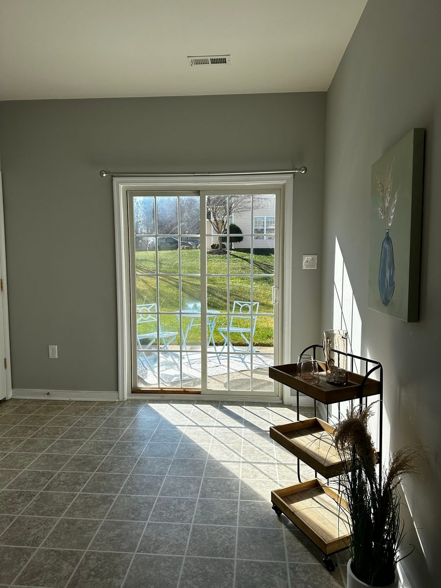
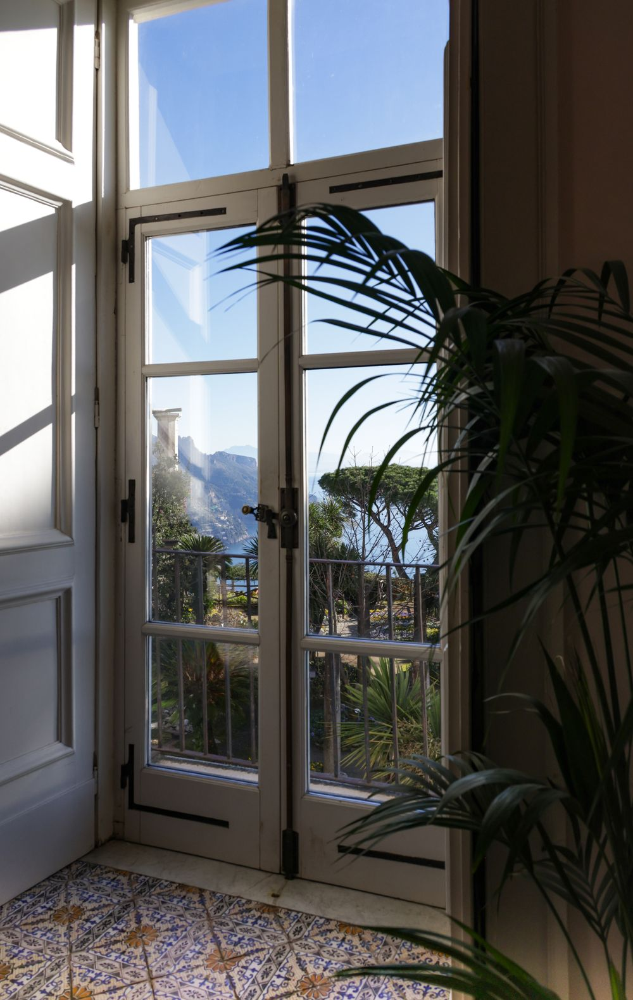

We fix what other people already tried to fix.
Doors, lighting, irrigation, storm damage, and the small jobs nobody else will schedule. Orlando, 4.8 across 24 reviews.

4.8
Google rating
24
Reviews
5
Of them name small jobs
Renovation is a choice. Restoration is a repair.
Both are in the name because both are in the work. One customer had a two-year-old house taking on water through the exterior joints every year, through round after round of inspections. That is not a renovation. That is something built wrong that needed putting right.
As found
Water coming in at the joints every storm. Inspections that found nothing. A slider that sticks. Lights that were never wired. The small job that has been on the list for two years.
As left
The cause found and fixed, not just the symptom. Cleaned up completely. A fair price, quoted first. And constant communication while it happens, which is the part reviewers mention most.
Six lines of work, all of them documented.
Each one traces either to a named review or to a topic Google counts across all twenty-four.
Small jobs
The most mentioned thing in the reviews by a distance. The list that never quite justifies a contractor: a handle, a fixture, a patch, a door that will not latch.
Named in five reviews
Doors and sliding-door replacement
Sliders swapped for French pairs, doors rehung, frames squared and weathersealed. If the old unit is coming out, the opening usually needs work too. That is part of the job, not an extra.
Named in two reviews
Lighting installation
Fixtures, exterior lights, and the switching to go with them. Often fitted in the same visit as the larger job, which is how one customer got a new French door and new lights on the same day.
Named in two reviews
Irrigation repair and maintenance
Heads, valves, timers, and the leaks you only find by watching the meter. In Central Florida an irrigation system runs most of the year, so it fails like something that runs most of the year.
Named in two reviews
Storm damage and water intrusion
Wind-driven water finding its way through exterior joints is the classic Florida failure, and the hardest to diagnose because it only shows itself in weather. We chase the path, not the stain.
From Marsha Jefferson's review
Reconfiguration and trade coordination
Jobs that need another vendor on site, or a layout changed rather than replaced. One customer's job needed both, and described the reconfiguration element as tricky.
From N Roe's review

Photographs on this site are representative of the work. They are not records of the jobs described.
“The quality if his work makes him worth every penny.”
“Fair prices I would recommend him to all my friends and family no question!!”
“He did a great job and stayed in constant communication!”
Quoted exactly as written, including the original spelling, from the review summary on our Google Business profile.

Start with the part that has not worked yet.
One call reaches Rickey. What has already been tried, and what it did, is usually the most useful thing you can say.